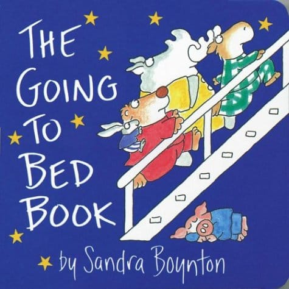

Рассказ о гусаре-схимнике
Небольшой и очень понравившийся мне отрывок из "Двенадцати стульев".
Небольшой и очень понравившийся мне отрывок из "Двенадцати стульев".
Клевый опыт, демонстрирующий прохождение луча света в струе воды, аналогично тому, как он распространяется в оптоволокне. Вот для чего нужны лазерные указки!
Martini — марка вермута (от немецкого Wermut, полынь) — крепленое вино, ароматизированное пряными и лекарственными растениями.
Думал, вдруг торкнет альбом, а он не торкнул, но вот этот трек очень даже)
Чтобы каждая сессия bash объединяла историю в один глобальный файл, надо в ~/.bash_logout добавить строку: history -a $HISTFILE
Ну, а про CTRL+R вы же знаете, да? :)
Нашел сегдня отличный минималистичный скринсейвер. Ну, а для ценителей глючный из Эшера :)

There are a lot of failures but most of them are minor ones.

А вот еще супер-штука!

Безумно классная интерактивная книжка для айфона/айпада. Прусь (кажется даже больше Тимы!) в ней совершенно от всего: текста, картинок, от того даже, как чувак ее читает :) Очень, очень классно!
Chandler: Y'know what else I can't believe? I had to kiss Phoebe and Rachel every time I left a room, I mean it's too bad they didn't see us having sex.
Monica: Do you know anything about women?
Chandler: No.
Monica: That's all right.
Chandler: Okay. (They kiss again.)
Надо смотреть конечно же. Это одна из самых прикольных серий :)